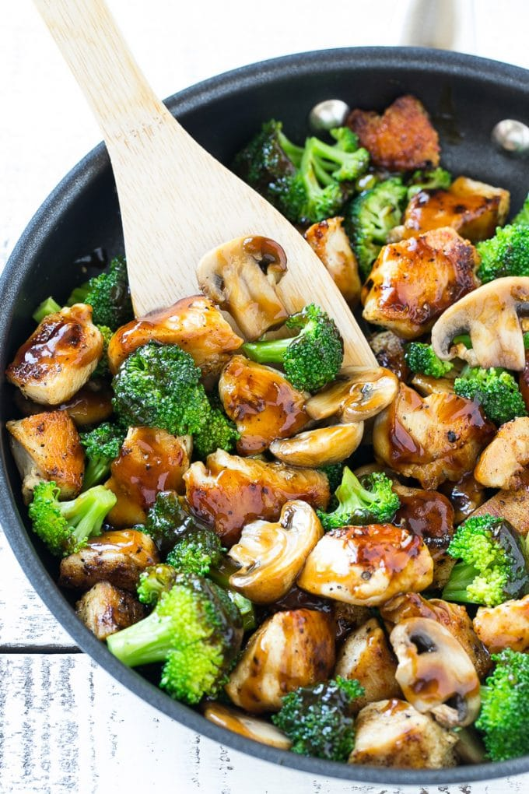

Stir-Fry

Description
Getting take-out is a crave-worthy indulgence. And with our easy
chicken veggie stir fry recipe, you can recreate the magic of a
Chinese takeout right in your very own kitchen. Feel free to mix
up the protein or vegetables depending on what you have in
your fridge. The simple sauce packs a flavor punch that will bring
the dish together, no matter what.
Ingredients
- 1 lb chicken breast
- salt to taste
- pepper to taste
- 1 lb broccoli
- 8 oz mushroom
- 3 tbsp frying oil
- sauce to taste
Steps
-
In a large pan on medium-high heat, add 1 tablespoon of oil.
Once the oil is hot, add chicken, season with salt and pepper,
and sauté until cooked through and browned. Remove cooked chicken
from pan and set aside.
-
In the same pan, heat 1 tablespoon of oil and add mushrooms.
When the mushrooms start to soften, add broccoli florets and
stir-fry until the broccoli is tender. Remove cooked mushrooms
and broccoli from the pan and set aside.
-
Add 1 tablespoon of oil to the pan and sauté garlic and ginger
until fragrant. Add the remaining sauce ingredients and stir until smooth.
-
Return the chicken and vegetables to the saucy pan, stir until
heated through.
- Serve with hot rice or noodles